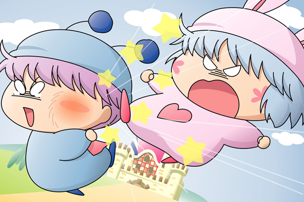

パピィ「ムルモ！」
ムルモ「ほぇ、誰でしゅか？」
パピィ「……うーん、予想ちていたとはいえかなりショックだわ。
えーっと、あたちはパピィよ。
あたちのことは分かるわよね？」
ムルモ「パピィ？
あぁ、昨日お母たまから聞いた名前でしゅね。
初めましてでしゅ、ボクはムルモでしゅ～」
パピィ「う・・・初めまちでじゃないわよ！
…じゃあ、前に誰かといつもケンカばかりちてたのは覚えてる？」
ムルモ「ボクは平和主義者だからケンカはしないでしゅよ。
そんなことよりボクはこれから高級マシュマロを買いに行くんでしゅよ。
よかったらパピィしゃんも一緒にどうでしゅか？」
違う…これはあたちの知ってるムルモじゃない！
パピィは一目散に空を飛んでいってしまいました。
＊
パピィ「今日はムルモにプレゼントを持ってきたの」
ムルモ「ほぇ～、いいんでしゅか？
何だかよくわからないけどありがたく受け取っておくでしゅ。
手作りのマフラーはとってもうれしいでしゅよ。
ありがとうでしゅ」
パピィは徹夜で作ったちょっと出来の悪いマフラーをムルモに渡しました。
ムルモはさっそく首にマフラーを巻き、パピィに笑顔を見せます。
パピィ「それだけ？
何か思い出ちたことはない？」
ムルモ「ほえ、何かって？
そんなことよりボクはこれからカラスルメのダンスショーを見に行くんでしゅよ」
パピィ「そう・・・わかったわ！」
パピィはまた一目散に空を飛んでいきました。
ムルモ「いったい何なんでしゅかね」
＊

パピィ「とりゃーっ」
ムルモ「ぎょえーっ」
突然のパピィの蹴りがムルモに命中！
ムルモ「何するんでしゅか！」
パピィ「どう？何か思い出ちた？」
ムルモ「ボクは怒ったでしゅよ。
お父しゃまに言いつけてやるでしゅ！！」
パピィ「もう！いつものムルモなら反撃ちてくるじゃないの！
なんでじっとちてるのよ！！」
ムルモ「紳士なボクは女の子には手を出さないでしゅからね」
パピィ「しょんな…」
ムルモ「ボクはこれからカメリしゃんの漬け物の試食で忙しいんでしゅ。
だからもう帰ってくだしゃい！」
パピィはしょんぼりしながら空を飛んでいきました。
＊
パピィ「ムルモ～、おはよう！」
ムルモ「げっ！」
パピィ「かわいいあたちを見て何か思い出ちたことはない？」
ムルモ「気色悪いでしゅ…」
パピィ「な、何よ！」
ムルモ「もうボクはパピィしゃんと話すことはないでしゅ。
それじゃあさよならでしゅ」
パピィ「待ってムルモ…」
がっくりと肩を落とすパピィ。
その光景を遠くからある妖精が眺めていました。
デートの翌日からの４日間を描きました。１５７話「ラベンダー色の恋・妖精編」でもそうでしたが、パピィは目的に向かっていろんな作戦を考えるんですよね。４日目のお化粧作戦については、１５７話でのあの厚い口紅を思い浮かべてくださいませ。
(2006/6/3)